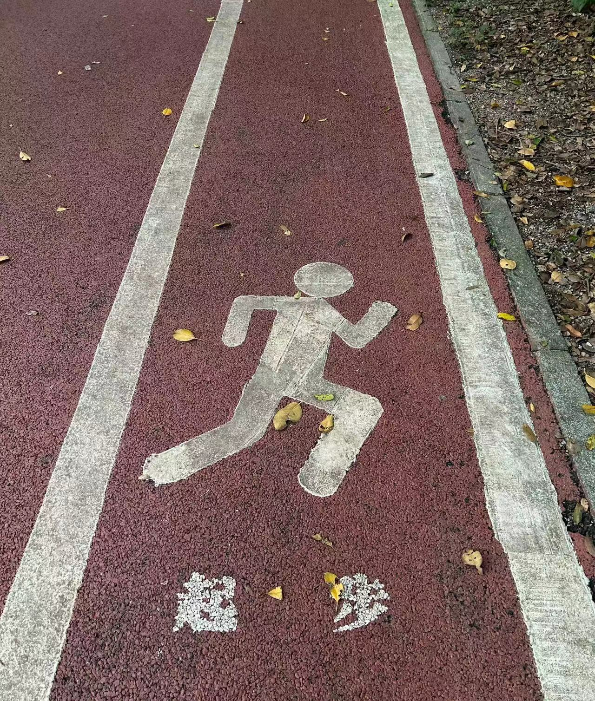

Citywalk是我热爱的活动
“Citywalk是我热爱的活动，它让我能够深入城市的脉搏，感受不同的文化和风情。感受不同的文化和风情。漫步在繁华的街头巷尾，欣赏着高楼大厦与古老建筑交织的景象，品味着各种美食和小店的特色。
我还对编程和技术有着浓厚的兴趣
我热衷于学习新的编程语言和框架，并尝试使用它们创建各种网页和应用程序。我熟练掌握了 Python、HTML、CSS、JavaScript 等编程语言和工具，并在相关项目中使用它们展示自己的技术能力。

喜欢阅读、旅行和运动。
阅读可以让我在思想上不断成长，旅行可以拓宽我的视野和见识，运动可以让我保持身体的健康状态。这些爱好和习惯使我始终保持充满活力和积极向上的状态。
